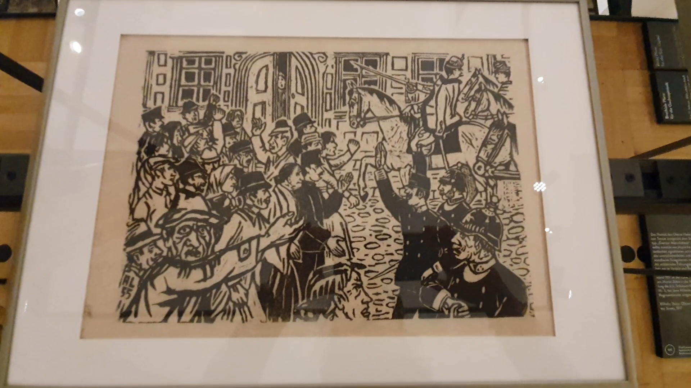
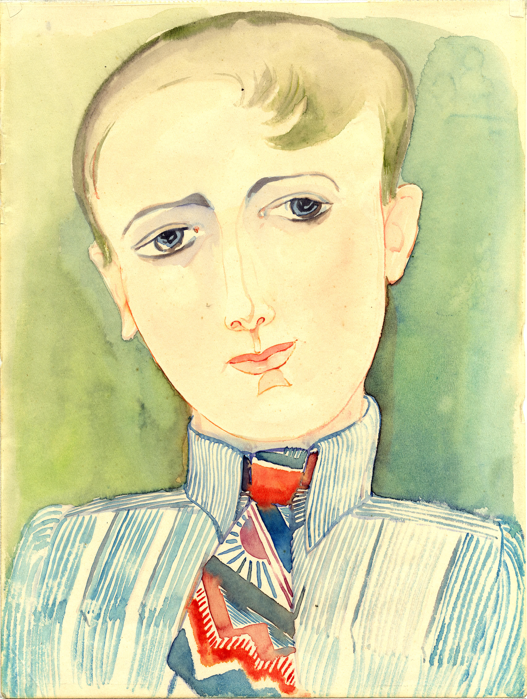

The gallery images of this tester app include a limited selection of artworks and contents provided by museums participating in the ReinHerit project. Selected artworks were used by visitors via SmartLens during the ReInHerit ReThinking live exhibitions held at the Graz Museum (Austria), the Museum of Cycladic Art (Athens, Greece), and the Bank of Cyprus Cultural Foundation (Nicosia, Cyprus).
The visitors of the exhibitions used the app to discover details of the artworks selected by the curators. All the materials have been provided and validated by the curators of the exhibitions.
Get the SmartLens app and learn how to use this
tester.